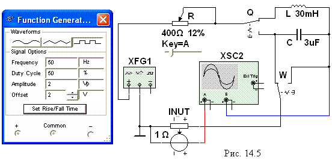
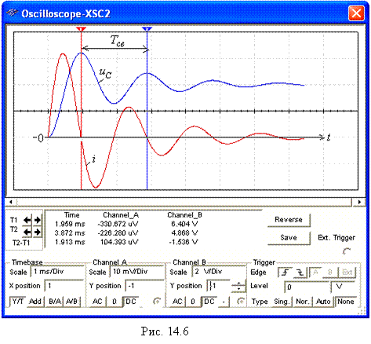

Задание 3. Запустить
лабораторный комплекс Labworks и программную
среду МS10 (щёлкнув мышью на команде Эксперимент меню комплекса Labworks). Открыть файл 14.5.ms10, размещённый в папке Circuit Design Suitе 10.0, или собрать на рабочем поле среды МS10 схему (рис. 14.5) для исследования переходных процессов в
неразветвлённых цепях первого и второго
порядков. С этой
целью:
- подключить выходы функционального генератора XFG1 и входы осциллографа XSC1 к указанным на схеме (рис. 14.5) узлам. Управляемый током
источник напряжения INUT включен в схему для снятия кривой напряжения,
идентичной по форме кривой тока i(t);
- установить
параметры реактивных элементов L и C схемы, рассчитанные в Задании 1, и сопротивление потенциометра R = 2Rкр,
его уровень Setting = 50%,
шаг изменения Inckrement = 1% и управляющую клавишу Key =
А клавиатуры.
Для уменьшения сопротивления R потенциометра
на 1% необходимо вначале его выделить (щёлкнув мышью на изображении
элемента R), а затем нажать
клавишу R; для увеличения сопротивления на 1% необходимо одновременно нажать клавиши Shift и R;
|  |
- задать параметры функционального генератора XFG1 (напряжение (Amplitude),
частоту (Frequency), смещение (Offset)) (см. рис. 4.5, слева) и осциллографа,
ориентировочные значения которых приведены на рис. 14.6. При этом длительность
импульса генератора tи > (5…8)t.
Примечание. Исследование переходных процессов в цепях проводить
при положении регулятора горизонтальной развёртки луча осциллографа, обеспечивающим
развертку исследуемых функций на 0,6…0,8 ширины его экрана;
- для чётных вариантов N: установить переключатель Q в верхнее, а W – в правое
положение для исследования переходных процессов в RL-цепи;
запустить программу MS10; скорректировать развёртку и уровни
кривых i(t) и uL(t) на экране осциллографа. Воспользовавшись визирными
линиями 1 и 2 и таблицей параметров, выводимой внизу экрана осциллографа,
определить постоянную времени t RL-цепи и измерить
значения переходных функций i(t) и uL(t) при t = 0, t = t, t = 2t и t = 3t; занести
их значения в строку таблицы, составленную при выполнении Задания 1; скопировать
схему и осциллограммы функций i(t) и uL(t) на
страницу отчёта; сравнить полученные
данные с расчётными значениями величин;

- для нечётных вариантов N: установить переключатель Q в нижнее, а W – в правое
положение для исследования
переходных процессов в RС-цепи; запустить
программу MS10; скорректировать развёртку и уровни кривых i(t) и uС(t) на экране осциллографа. Воспользовавшись визирными
линиями 1 и 2 и таблицей параметров, выводимой внизу экрана осциллографа,
определить постоянную времени t RC-цепи и измерить
значения переходных функций i(t) и uC(t) при t = 0,
t = t, t = 2t и t = 3t; занести
их значения в строку таблицы, составленную при выполнении Задания 1; скопировать
схему и осциллограммы переходных функций i(t) и uC(t) на страницу
отчёта; сравнить полученные данные с
расчётными значениями величин.